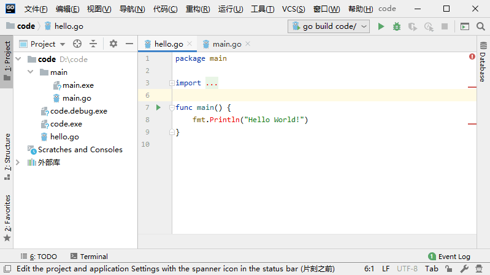
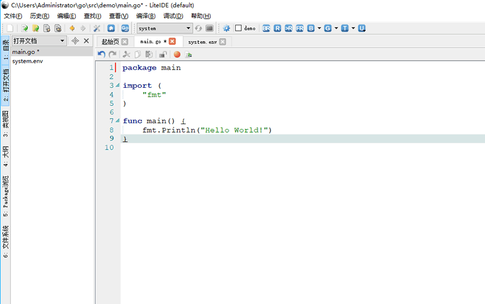
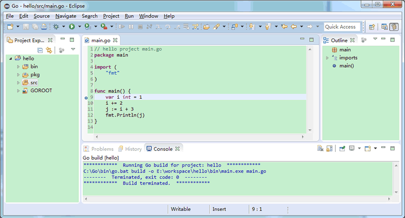

Go语言集成开发环境（IDE）大汇总
前面我们介绍了Go语言的安装，本节我们来为大家介绍几款强大的Go语言集成开发环境（Integrated Development Environment，IDE）和编辑器。
如何挑选合适的编辑器或集成开发环境呢？下面列举了一些Go语言集成开发环境或编辑器应该具备的特性：
下面为大家推荐几款常用的适用于Go语言的编辑器或集成开发环境。
关于 Goland 的详细使用说明请参考《Goland 2019下载和安装》一节。
LiteIDE 是一款非常好用的轻量级 Go 集成开发环境（基于 QT、Kate 和 SciTE），包含了跨平台开发及其它必要的特性，对代码编写、自动补全和运行调试都有极佳的支持。它采用了 Go 项目的概念来对项目文件进行浏览和管理，它还支持在各个 Go 开发环境之间随意切换以及交叉编译的功能。
同时，它具备了抽象语法树视图的功能，可以清楚地纵览项目中的常量、变量、函数、不同类型以及他们的属性和方法。
关于 LiteIDE 的安装和使用大家可以参考《LiteIDE搭建Go语言开发环境》一节。
如果你对集成开发环境都不是很熟悉，那就使用 LiteIDE 吧，另外使用 GoClipse 或者 IntelliJ Idea Plugin 也是不错的选择。
代码补全一般都是通过内置 GoCode 实现的（如：LiteIDE、GoClipse），如果需要手动安装 GoCode，在命令行输入指令
VS Code 使用 JSON 格式的配置文件进行所有功能和特性的配置，同时它还可以通过扩展程序为编辑器实现编程语言高亮、参数提示、编译、调试、文档生成等各种功能。
如何挑选合适的编辑器或集成开发环境呢？下面列举了一些Go语言集成开发环境或编辑器应该具备的特性：
- 语法高亮是必不可少的功能，这也是为什么每个开发工具都提供配置文件来实现自定义配置的原因。
- 拥有较好的项目文件纵览和导航能力，可以同时编辑多个源文件并设置书签，能够匹配括号，能够跳转到某个函数或类型的定义部分。
- 完美的查找和替换功能，替换之前最好还能预览结果。
- 当有编译错误时，双击错误提示可以跳转到发生错误的位置。
- 跨平台，能够在 Linux、Mac OS X 和 Windows 下工作，这样就可以专注于一个开发环境。
- 能够通过插件架构来轻易扩展和替换某个功能。
- 拥有断点、检查变量值、单步执行、逐过程执行标识库中代码的能力。
- 能够方便的存取最近使用过的文件或项目。
- 拥有对包、类型、变量、函数和方法的智能代码补全的功能。
- 能够方便地在不同的 Go 环境之间切换。
- 针对一些特定的项目有项目模板，如：Web 应用，App Engine 项目，从而能够更快地开始开发工作。
下面为大家推荐几款常用的适用于Go语言的编辑器或集成开发环境。
1) Goland
Goland 是由 JetBrains 公司开发的一个新的商业 IDE，旨在为 Go 开发者提供的一个符合人体工程学的新的商业 IDE。Goland 整合了 IntelliJ 平台（一个用于 java 语言开发的集成环境，也可用于其他开发语言），提供了针对Go语言的编码辅助和工具集成。

关于 Goland 的详细使用说明请参考《Goland 2019下载和安装》一节。
2) LiteIDE
LiteIDE是一款专门针对 Go 开发的集成开发环境，在编辑、编译和运行 Go 程序和项目方面都有非常好的支持。同时还包括了对源代码的抽象语法树视图和一些内置工具（此开发环境由国人 vfc 大叔开发）。LiteIDE 是一款非常好用的轻量级 Go 集成开发环境（基于 QT、Kate 和 SciTE），包含了跨平台开发及其它必要的特性，对代码编写、自动补全和运行调试都有极佳的支持。它采用了 Go 项目的概念来对项目文件进行浏览和管理，它还支持在各个 Go 开发环境之间随意切换以及交叉编译的功能。
同时，它具备了抽象语法树视图的功能，可以清楚地纵览项目中的常量、变量、函数、不同类型以及他们的属性和方法。

关于 LiteIDE 的安装和使用大家可以参考《LiteIDE搭建Go语言开发环境》一节。
3) Sublime Text
一个革命性的跨平台（Linux、Mac OS X、Windows）文本编辑器，它支持编写非常多的编程语言代码。对于 Go 而言，它有一个插件叫做 GoSublime 来支持代码补全和代码模版。4) GoClipse
是一款 Eclipse IDE 的插件，拥有非常多的特性以及通过 GoCode 来实现代码补全功能。其依附于著名的 Eclipse 这个大型开发环境，虽然需要安装 JVM 运行环境，但却可以很容易地享有 Eclipse 本身所具有的诸多功能。这是一个非常好的编辑器，完善的代码补全、抽象语法树视图、项目管理和程序调试功能。

如果你对集成开发环境都不是很熟悉，那就使用 LiteIDE 吧，另外使用 GoClipse 或者 IntelliJ Idea Plugin 也是不错的选择。
代码补全一般都是通过内置 GoCode 实现的（如：LiteIDE、GoClipse），如果需要手动安装 GoCode，在命令行输入指令
go get -u github.com/nsf/gocode 即可（务必事先配置好 Go 环境变量） 。5) Visual Studio Code（简称VS Code）
是一款由微软公司开发的，能运行在 Mac OS X、Windows 和 Linux 上的跨平台开源代码编辑器。VS Code 使用 JSON 格式的配置文件进行所有功能和特性的配置，同时它还可以通过扩展程序为编辑器实现编程语言高亮、参数提示、编译、调试、文档生成等各种功能。
关注公众号「站长严长生」，在手机上阅读所有教程，随时随地都能学习。内含一款搜索神器，免费下载全网书籍和视频。

微信扫码关注公众号